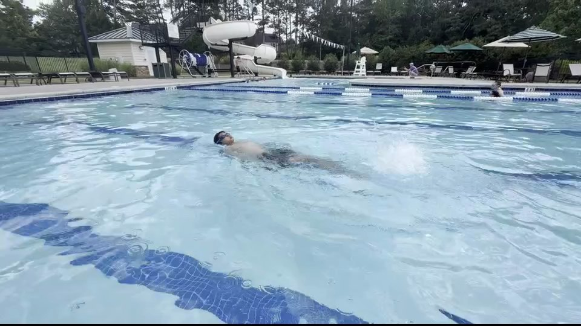
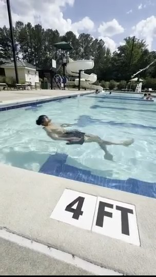
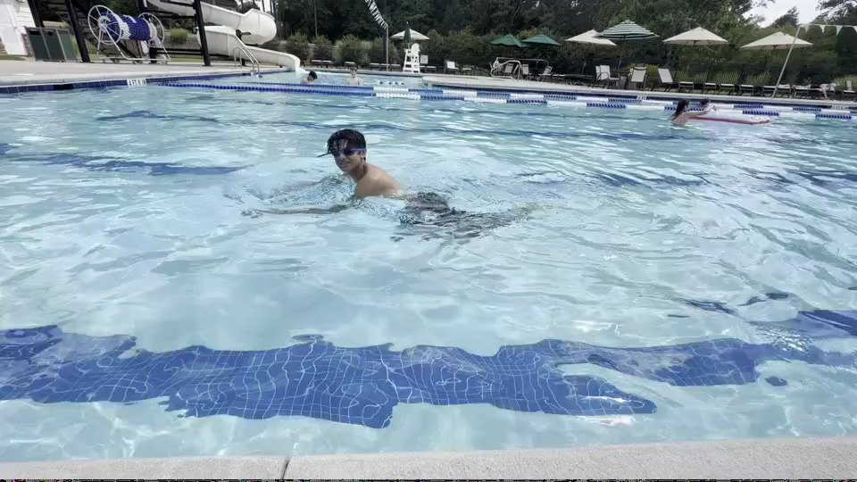

Film one lap.
Fix one thing.
The app reads the swimmer's body line on this phone and gives one plain tip. Nothing is uploaded.
Best results: side of the pool, phone near water level, 10 to 15 seconds of swimming. How to film.
This is a swim-form helper, not a safety device. An adult must always be watching the water.
What the app sees
Real frames from our own filming. Tap one and the pose model runs on it right here, on this device, and draws what it found. The orange line is the torso line the score is built on.
How to film a lap the app can read
The pose model only scores frames where it can see both shoulders and both hips. These five habits came straight out of our test footage.
- Stand on the side, not the end. The app measures the angle between shoulders and hips, so it needs a side view.
- Get low. Crouch or sit on the deck so the phone is near water level. From standing height the hips vanish under the surface.
- 3 to 5 metres away, landscape. Close enough that the swimmer is a decent size in the frame, far enough to fit a few strokes.
- Start after the push-off, stop before the wall. Standing frames are ignored anyway, but the clip stays short and quick to score.
- One swimmer in the shot. The app follows the most confident person it finds. A crowded lane confuses it.


Which situations the phone model reads
From running our six sample clips through the app's own code (test/run_clips_yolo.js), October 2026.
The app needs the body in at least 30% of frames and at least one second of real travelling before it will give a number.
Reading the swimmer
Loading the pose model…
Step through the lap
Orange line: body angle while travelling (0° is flat). Aqua band: the target; where the line runs through it the ink prints green. Short marks: readable but not moving, so not scored. Tap the chart to jump.
What to fix
Progress
Levels: Tadpole, Minnow at 3 laps, Otter at 8, Dolphin at 15, Shark at 25. A week counts toward the streak when at least one lap is scored.
Why trust the number
Before writing any screens we ran a pose model over 31 clips we filmed ourselves (16 swimming, 5 treading, 10 acted struggling) and asked one question: does the body angle actually separate flat swimming from a dropped body?
It does. When the swimmer is actually swimming, the body reads between 10° and 43°; a vertical body reads 60° to 88°. The swimming dots up near 80° are clips where the kid spent most of the time standing at the wall, which is why the app throws away frames where the shoulders are not travelling. What the model struggles with is seeing the torso at all when the swimmer is face down in splash, so the app refuses to score instead of guessing.
The app's own pipeline on real clips
| Clip | Readable | Body | Result |
|---|---|---|---|
| Backstroke lap | 33% | 16° | 89 |
| Treading water | 99% | 81° | 47 |
| Body dropped (acted) | 71% | 76° | 50 |
| Standing at the wall | 30% | 82° | refused |
| Freestyle from deck (2 clips) | 18% | – | refused |
Pose model: YOLO11n-pose exported to ONNX, run by onnxruntime-web in the browser. The study used the larger YOLO11m at 1280 px, which reads about 60% of swimming frames; the phone model trades some of that for speed. Everything above is reproducible from the repository's test folder.
Honest limits
- Thresholds come from one pool and one swimmer. They need more swimmers before they mean anything beyond "flat or not".
- Freestyle filmed from standing height is mostly unreadable with the phone model.
- The app follows one person. It is not a lifeguard and never will be.
Privacy and settings
Consent
Film only swimmers you are responsible for, or who have agreed. For anyone under 18 that means a parent or guardian is doing the filming or has said yes. Do not film other people's children in the background if you can avoid it, and never share a clip without asking.
Your data
Credits
Built for the 2026 Congressional App Challenge by the SafeDive team, Cary, North Carolina. It grew out of our drowning-detection research project. Pose model: Ultralytics YOLO11-pose (AGPL-3.0). Runtime: onnxruntime-web (MIT). All photos are our own. Version .